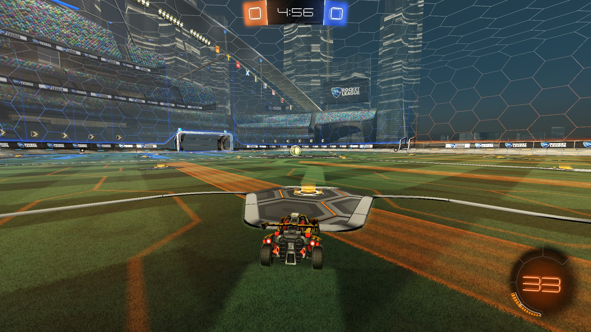
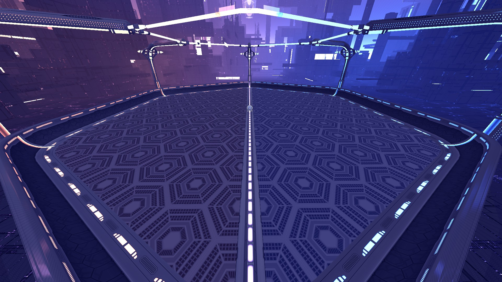
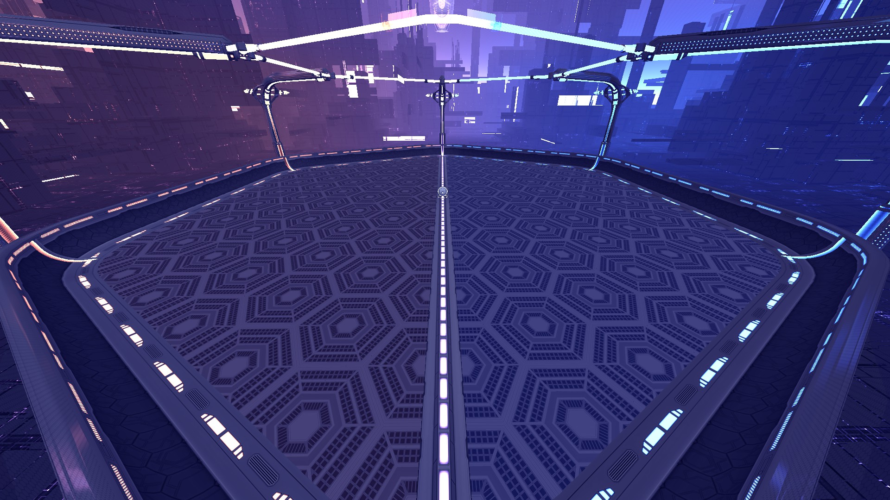

About
Rocket League is a popular game played by millions around the world. It is based on the idea of soccer, but instead, the arena is much smaller, and players can choose from a vast collection of cars. It is a sequel to the game Supersonic Acrobatic Rocket-Powered Battle-Cars. Rocket League was originally released for the Playstation and Steam but has been added to Epic Games, and Xbox. Rocket League is constantly trying to implement new cars into the game by collaborating with very well-known car manufacturers. It is a little different from soccer in that games are only 5 minutes in length. The game can go on for much longer if both teams have the same score in which case the game goes into overtime. In overtime, the game length does not have a time limit. In overtime, both teams are put into a golden goal scenario. Rocket League has both a casual mode and a competitive mode to fit both kinds of players. In the game there are 1v1s, 2v2s, and 3v3s but we'll only focus on 3v3s. The other two modes are much alike in the rating but have different ranges between rank. For example, in 1v1s players are challenged to develope their individual skill. In 2v2s the player is forced to try to rely on other players to either make saves or to make a plays with you. Finally, 3v3s does good job at representing the knowlegde on can learn from playing these other modes while also having additional players to work with or be aware of.
As you can see from the image above, this is what a player sees when they enter a game. There are two main areas of the screen that the player will be familiar with when they start to play the game, and they are the areas on the bottom right and the top middle. On the bottom right it will show the player how much boost they have left that they can use but once it hits 0, the player will have to drive over pads, much like the one in front of the car in the picture. There are two main pads there are small pads that replenish a small amount of boost and there are bigger pads that replenish 100% of the boost back to the player. These pads are located on each corner of the pitch and in the middle of the field on either side no matter the map. There are a few maps that the boost pads are scattered in different locations, but the idea is the same depending on which pad the player drives over it will replenish a little bit if it's a small pad and 100% if it's a big pad and the player can hold up to 100 boost at a time. The player can still drive over the pads, but they will not get any boost above 100. Since the launch of Rocket League, the game has increased in the number of game modes and now include Snow Day, Hoops, Rumble, and Dropshot.
Game Modes: Snow Day, Hoops, Rumble and Dropshot
The game mode on the left is called Snow Day and it was the first game mode to come out, apart from the original and only game mode of soccer, on February 10th, 2016. It is played similarly to hockey and was a game mode that players had to get used to because its hitbox is not the same as the ball that all of the players were used to and does not bounce as high either. Following the release of Snow Day, another game mode was added on April 25th, 2016 called Hoops. Unlike Snow Day, Hoops was Rocket Leagues' attempt to add a form of basketball in their game. The goals were replaced with hoops and has a map of hits own called Dunk House.
 

The following two game modes are Rumble and Dropshot. Rumble can be played on any map except Dunk House, Core 707, and DFH Stadium version Snowy. Rumble is chaotic at times, to say the least, but the game mode introduces a player to power-ups that will either affect the ball or another player. These random power-ups recharge every 10 seconds. The objective of Rumble is the same as soccer, it only adds power-ups that can either help or slow the other team. Dropshot is unique and creates a different objective. Instead of scoring a goal, like in soccer, a team must first break through the floor to score. As you can see from the picture on the right you can see that there is still a blue and orange team but the floor starts solid, but every bounce that is not charged does one tile worth of damage to the floor. The ball will indicate to the teams how much damage it is about to do if it hits the floor. The ball will glow vibrantly with the color of the team that last hit the ball. If the ball is glowing for example blue and lands on the orange teams' side it will damage the orange floor more because it is "supercharged." The floor can withstand two hits from the ball before it exposes the floor goals. It is similar to volleyball in a way but in the game, you have more chances to come back because the floor is not fully exposed so it is anyone's game.